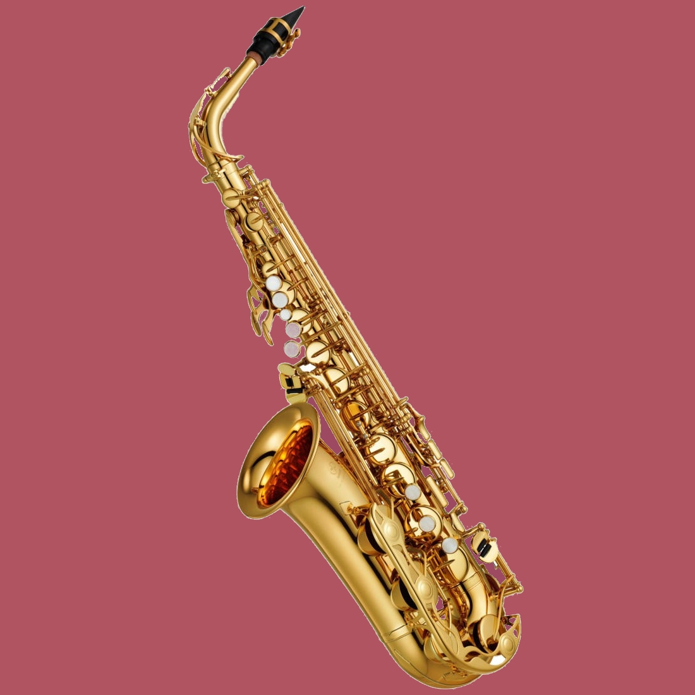
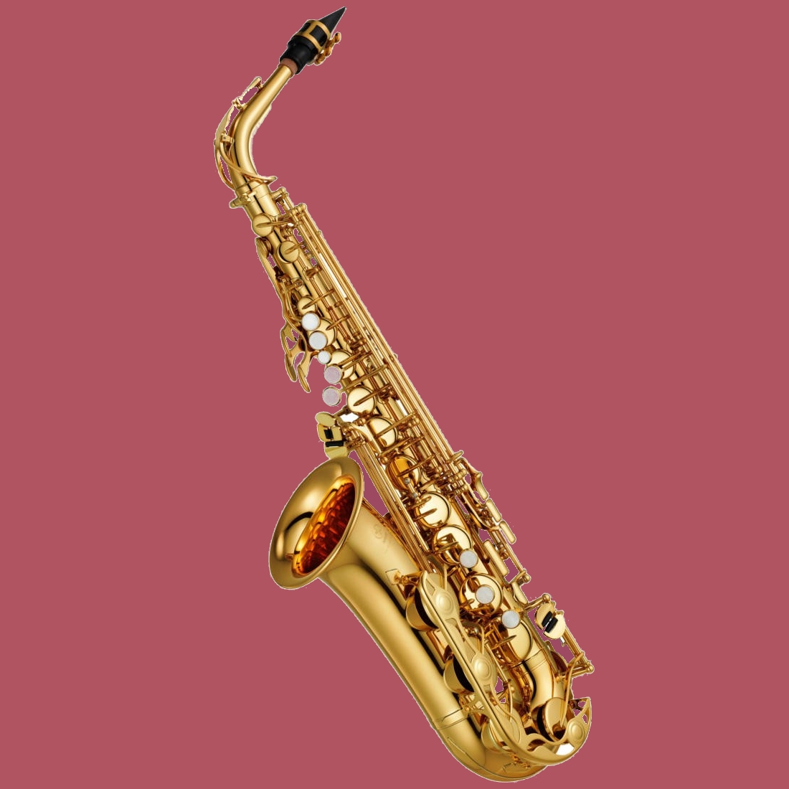

Though the posted videos really do a far greater job than I would be able to in helping newcomers get started, it's important to consider a few other things. There is a certain buy in value that has to be considered when choosing an instrument. The instrument can range in quality from poor to masterful and even appear more as artwork than an instrument for use. A lot of starters pick instruments that are far outside of the price range, and other's don't spend enough to get an instrument that feels worthy of their time and effort. For starters, I would suggest browsing through instruments with Guitar Center. Guitar Center is a great starting place for advice, lessons, resources, and typically good quality products. Spending within a comfort level is very important - you want to be able to work with and appreciate the instrument, not worry about a price tag associated, and fear playing.
Just picking an instrument off the wall doesn't really help anyone. Take the time to learn about the instrument. Learn about how to care for it and what its various components do. Watch videos on how to tune the instrument and how to strum, pick, strike, or press the instrument to get the desired sound. Learn a couple of chords...play along to videos. Find a song that you want to workthrough, and don't get discouraged! Everyone starts somewhere, and just taking the first steps is very admirable. Learn to enjoy the learning process. Play with a metronome, and try sticking with a routine for half an hour a day or every other day. You'll improve faster than you would expect.